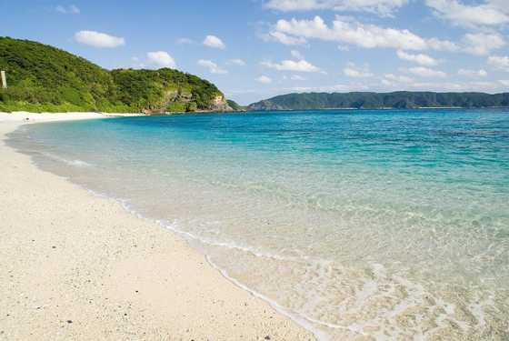
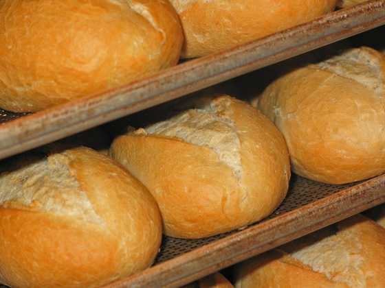
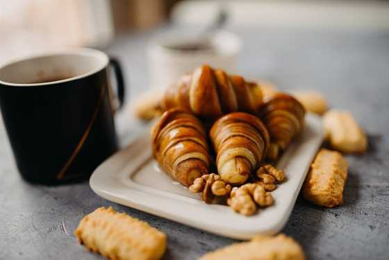
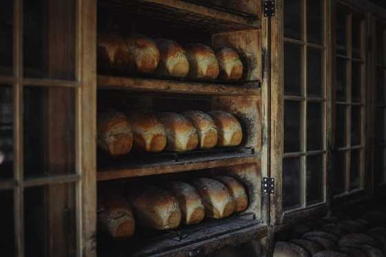
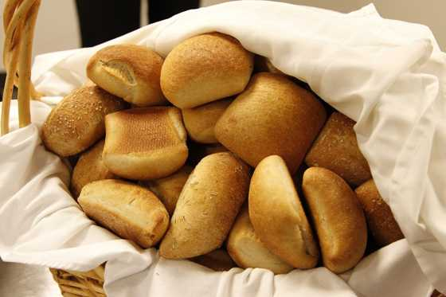
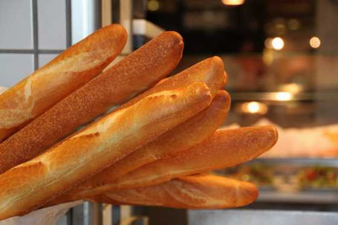
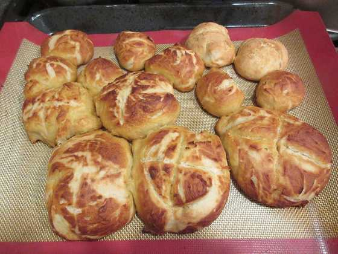
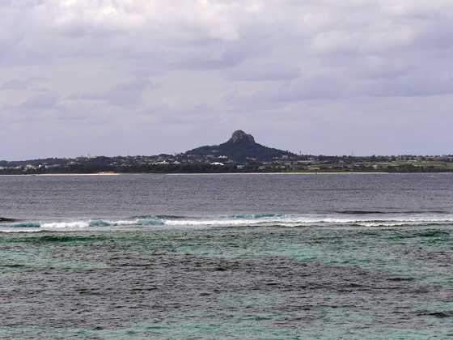
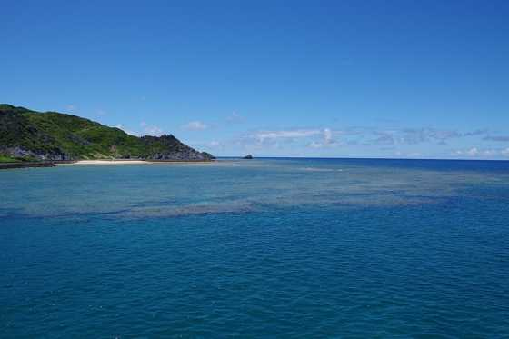
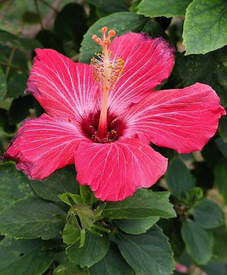

お店の由来・想い
ブレッドショップ麦翔(「麦翔 BREAD FACTORY」「Bakuto Bread Factory」の表記もあります)は、うるま市石川曙の外人住宅が並ぶ海沿いの街にあるパン屋さんです。2023年7月ごろにオープンしたと紹介されており、海に面した立地で、店の前には駐車場があります。
やわらかい「ソフト系」のパンが中心と紹介され、食パンはくろごま、ライ麦、麦芽、ブラックココアなど種類が豊富とのこと。店内はシックな雰囲気で、壁一面のアートが飾られていると紹介されています。
店名「麦翔」の意味や、オーナーさまの想いは確認できていません。上記は公開されているブログ等の情報にもとづくもので、最新の情報はInstagramでご確認ください。
パン・メニュー
営業時間・定休日・価格・商品の詳細は準備中です。ご来店前にInstagramをご確認ください。










口コミ(イメージ例)
イメージ例
海のそばでパンを選ぶ時間が、ちょっとした休日の楽しみになりました。(創作)
イメージ例
食パンがふんわりやわらかく、朝食が待ち遠しくなります。(創作)
イメージ例
店内の雰囲気がおしゃれで、ついあれこれ買ってしまいました。(創作)
上記は制作側が作成したイメージ例で、実際のお客さまの声ではありません。